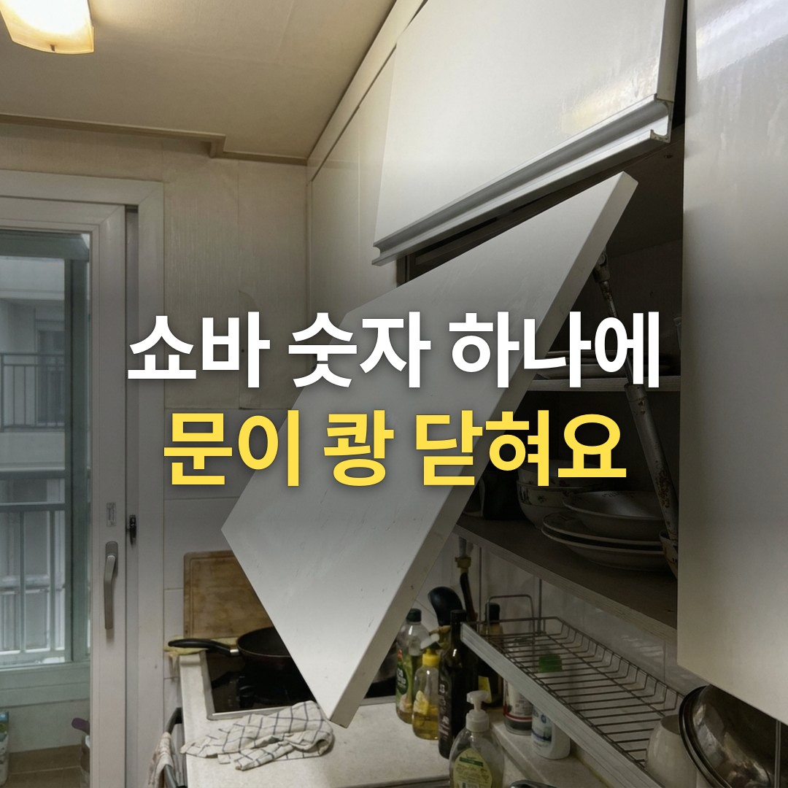
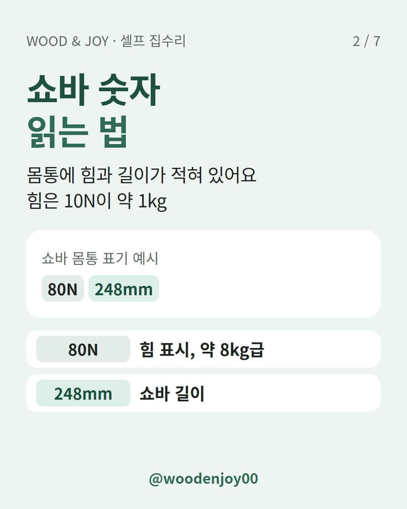
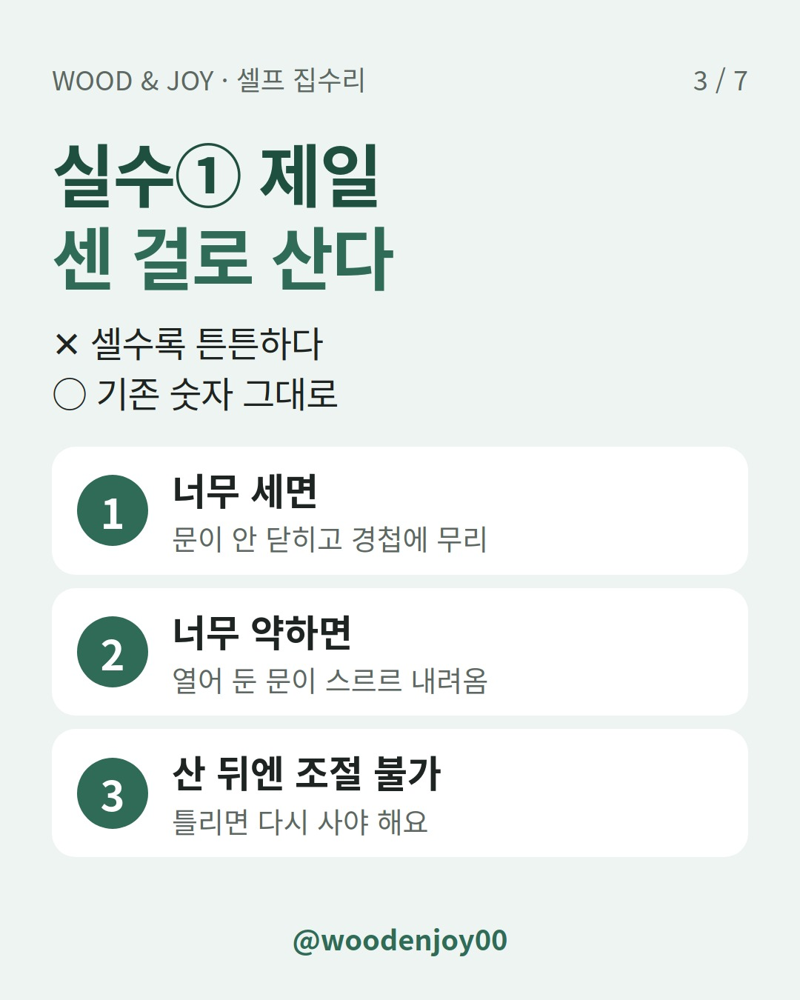
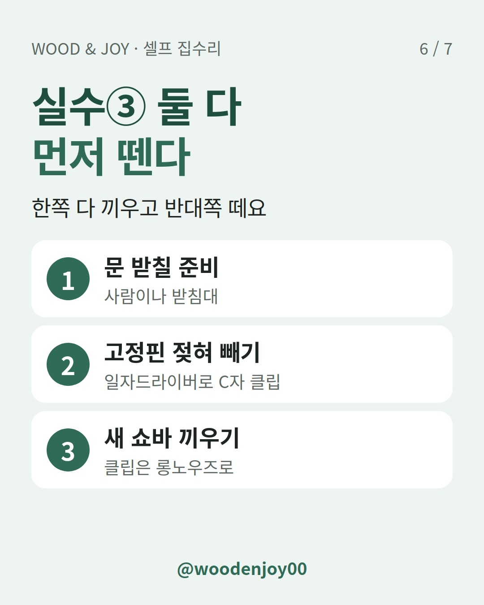

이 포스팅은 쿠팡 파트너스 활동의 일환으로, 이에 따른 일정액의 수수료를 제공받습니다.
상부장 쇼바를 제일 센 걸로 사면 이번엔 문이 안 닫혀요. 기존 쇼바 몸통에 적힌 힘(N·kg)과 길이(mm)를 그대로 맞춰 사면 돼요.

위로 여는 상부장(플랩장)은 쇼바가 문을 열린 채로 잡아 줘요. 쇼바가 낡으면 문이 조금씩 내려오고, 심하면 떨어지듯 닫혀요. 이럴 땐 문 양쪽 쇼바를 같이 바꿔요.

안 돼요. 너무 세면 문이 안 닫히거나 닫을 때 힘이 많이 들어요. 경첩에도 무리가 가요. 반대로 너무 약하면 문을 열린 채로 못 잡아 줘요.
가스쇼바는 공장에서 압력을 채워 나와서 산 뒤에 힘을 조절할 수 없어요. 숫자를 잘못 고르면 다시 사야 해요.
셀프 교체 후기 하나: 10kg짜리는 닫기가 너무 힘들고 4kg짜리는 쾅쾅 닫혀서, 8kg·5kg로 다시 사서 맞췄대요.
숫자가 지워져 안 보이면 판매처 안내를 참고해요. 보통 가정 싱크대는 5~7kg을 권한다는 판매처가 있어요. 다만 문 크기나 유리 문이냐에 따라 달라지니 정답은 아니에요.

길이(mm)도 쇼바에 적혀 있어요. 길이가 다르면 문이 열리는 각도가 달라져요. 한 후기에선 1cm쯤 짧아도 괜찮았는데, 길이가 똑같으면 기존 나사 구멍을 그대로 쓰기 쉬웠대요.
그래서 상부장 가스쇼바는 옵션에서 힘과 길이를 둘 다 기존 것과 맞춰 고르는 게 안전해요.
댐퍼 달린 쇼바는 끼우는 방향이 정해진 제품도 있어요. 설명서부터 확인하세요.

쇼바만 바꾸는 건 셀프로 충분해요. 경첩이 빠졌거나 나사 구멍이 부서졌거나 장 자체가 처졌으면 업체에 상담하는 게 나아요.
같은 주방에서 함께 손보기 좋은 글도 있어요. 싱크대 경첩 사기 전에, 아웃도어·인도어부터 확인하세요 / 서랍레일 잘못 사면 안 닫혀요, 길이·옆 틈부터 재세요
| 지금 문 상태 | 의심할 것 | 할 일 |
|---|---|---|
| 열어 두면 스르르 내려옴 | 쇼바 노후·힘 부족 | 같은 숫자로 양쪽 교체 |
| 떨어지듯 쾅 닫힘 | 쇼바 노후·힘 부족 | 같은 숫자로 양쪽 교체 |
| 꾹 눌러야 겨우 닫힘 | 힘이 너무 셈 | 숫자 낮은 쇼바로 다시 |
| 문 높이가 양쪽 다름 | 쇼바 길이가 다름 | 같은 길이로 맞춤 |
사기 전 체크리스트
Q. 한쪽만 고장 났는데 한쪽만 바꿔도 돼요?
양쪽 힘이 다르면 문이 고르게 안 올라가요. 같은 제품으로 양쪽을 같이 바꾸길 권해요.
Q. 너무 센 걸 샀는데 힘을 줄일 수 있어요?
안 돼요. 가스쇼바는 힘 조절이 안 되는 제품이라 숫자가 낮은 걸로 다시 사야 해요.
Q. 숫자가 아예 안 보이면요?
옆 칸에 크기가 같은 문이 있으면 그 쇼바 숫자를 보세요. 없으면 문 크기를 재서 판매처에 물어보세요.
아래 3줄만 기억하세요.
여러분 집 상부장 쇼바에는 몇 kg이라고 적혀 있나요? 댓글로 알려 주세요.